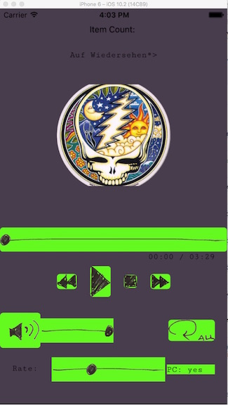
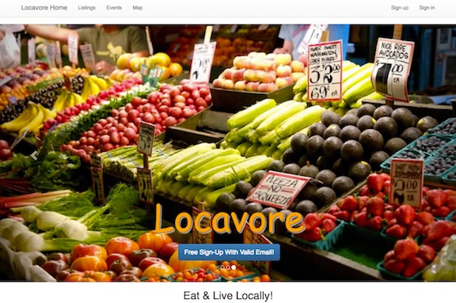
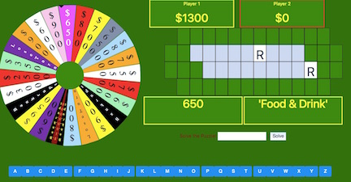
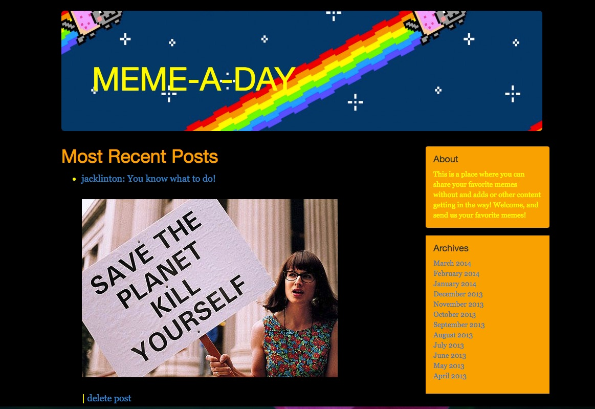

Jack Linton

I am a former horticulturist and farmer who has grown high quality food using modern, large-scale hydroponic greenhouse systems, smaller organic field growing operations, and I was even the CEO and founder of my own indoor urban mushroom farm in an old warehouse facility in Philadelphia. I am a graduate of the New York Code and Design Academy and I am starting a new career as a full stack app developer. One day I would like to combine my love of growing high quality food with my love of making reliable and enjoyable technological applications to enhance people's personal, career, and educational lives.
Below you will find short descriptions and links to some of the projects I am working on. Thankyou for visiting my site and I hope that you will take some time to test and enjoy my work. I would love to hear from you about what you think, and you can find my contact information at the bottom of the page.
Projects
First, this page itself. It was my first project as a web developer about 1 week into learning how to program. It's obviously not my best work, but I think it shows a little bit about me and it reminds me of how far I'm come in a few short months. In the next few projects, you will hopefully get an idea of how hard I've worked to get to where I am now.
My current project is a bit more ambitious than my previous work. For this project I taught myself about asyncronicity, ES6 syntax, modular javascript, node, mongoDB, express, graphQL, React, React-Native, and Relay, all in order to build a full stack javascript app that works natively on mobile platforms and has fast, streamlined commincation of a large amount of data.
The data comes from Archive.org's streaming live music collection which contains hundreds of thousands of live concerts available for free. The app allows the user to create and save their own collections of music so that they can find what they like quickly and efficiently, and they can create playlists which automatically cache all the audio files in the list and sync automatically and instantaneously with the server live so that there is gapless playback between tracks and the user can continue listening on the road even if they lose their connection to the internet. They can then sign in from any other device and have access to the same playlists anywhere they happen to be as long as they have an internet connection. The native applications also allow the user to save the music locally on their device.

Expo Deployment
On GithubAnother project I'm working on is a full scale Ruby on Rails social media app for gardeners and for farmers to trade and sell their fresh produce, services, and other creations. It's built on a PostgresQL database with automatic location geocoding, an autofill feature for addresses, image attachments, a built in messaging and email app, and GoogleMaps API displays of all listings near your location for easy trading and bartering.

On GithubNext is a wheel of fortune style game that created at the end of about a month of web design work. I'm pretty proud of this, as it is made entirely from scratch (except for the button styles). The wheel itself was created using an object oriented SCSS approach. The spin animation is CSS of course, and I created an algorithm that spins the wheel a random number of degrees betweeen one and two full rotations and determines which slice of the wheel the pointer landed on to light it up and display its value in the box. The game board is a flex box with custom algorithm that I created to position the words for the the game just right in the context of all the green boxes in the grid. It calculates the number of letters and the number of words, and then it calculates how many green boxes need to go in front of, in between, and behind the words, and then it creates one box for each letter using the flex values to position everything in the correct order. Click on the wheel to spin it and begin the game!
Play the Game! 
On GithubThe Last project is my first full stack app using Sinatra. It was supposed to be a twitter clone but I decided to take it a bit further. I made it into a site for posting a daily meme instead, and to add even more interest I added a feature for adding steganographic messages hidden in the meme photos. People who signed up for the site in a certain group would see the hidden messages in the memes decoded while everyone else would just see the daily posting of a meme image.

On Github
Deployed on Heroku
Deployed to Heroku